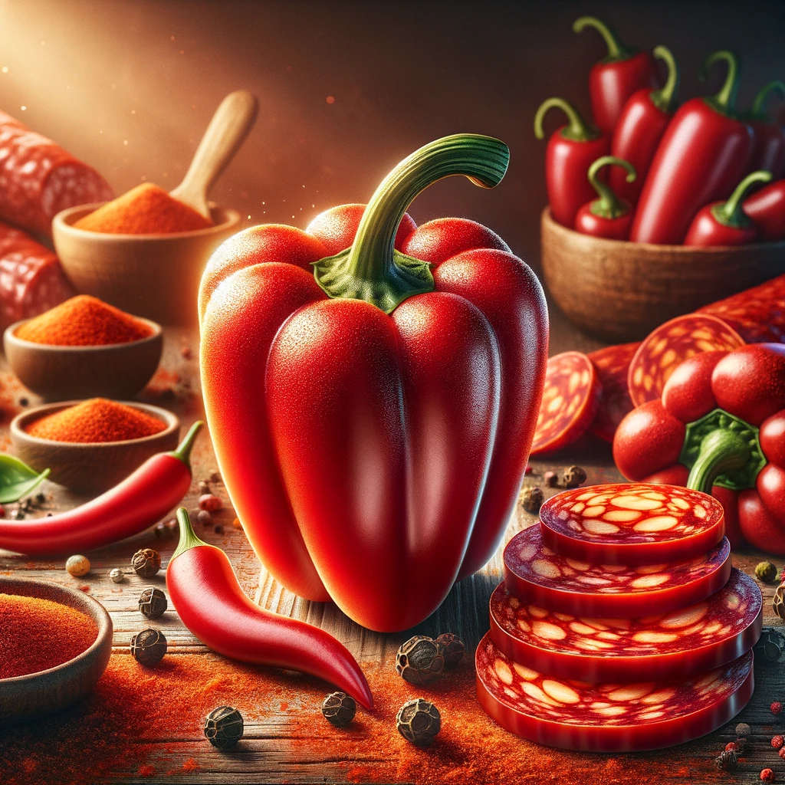

El Pimentón: Ingrediente Estrella del Chorizo
Contrario a la creencia popular, el ingrediente que realmente define al chorizo no es la carne de cerdo, sino el pimentón. Este condimento no solo le otorga al chorizo su color rojo característico, sino que también es responsable de su inconfundible aroma y sabor. El pimentón, una especia derivada del secado y molido de pimientos rojos, es lo que distingue al chorizo español de otros embutidos alrededor del mundo.
Mientras que la carne de cerdo ha sido tradicionalmente considerada el componente principal del chorizo, es el pimentón el que aporta las cualidades más distintivas a este embutido. Su sabor ahumado y su profundidad aromática enriquecen el chorizo de una manera que la carne por sí sola no podría. Además, el pimentón aporta beneficios para la salud, incluyendo antioxidantes y propiedades antiinflamatorias, lo que contrasta con las preocupaciones asociadas al consumo excesivo de carne roja.
Reconocer el papel central del pimentón en la elaboración del chorizo nos invita a apreciar la riqueza de la gastronomía española y a revalorizar los ingredientes que la hacen única. Así, el chorizo se celebra no solo como un producto de la carne, sino como una expresión de la tradición culinaria en la que las especias juegan un papel protagonista.
Para más información y perspectivas sobre la importancia del pimentón en la cocina, consulte este tweet: